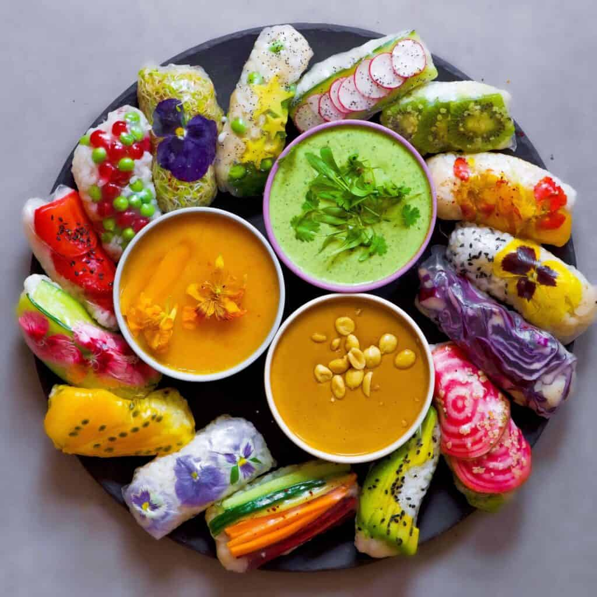

Rice Paper Wraps
Go Back

Rice paper wraps are a healthy, versatile food you can mix & match with your favorite fillings!
These wraps can be sweet or savory, a light snack or a hearty dinner. You can make
them cold for a refreshing crunch, or serve them piping hot with a spicy sauce. This makes them great
if you have a lot of ingredients you need to use, or if you have a family with picky
eaters!
Since there are so many options to make these, it's hard to pick a single recipe for them.
Feel free to substitute any fillings you don't like with something that suits your palate.
Ingredients
Wraps
These particular ingredients can be eaten raw for a crisp, light snack, or cooked and seasoned
for a more savory experience.
- Rice Paper
- Jasmine Rice
- Bell Pepper
- Lettuce
- Avocado
- Cucumber
- Carrots
Dipping Sauce
These ingredients yield about 1/2 cup of sweet & spicy sauce.
It pairs perfectly with any savory fillings.
- 1/2 Cup Mango, cut into chunks or blended
- 1-2 tsp Chili Paste (Gochugang)
- 1/2 Tbsp Sweetener (maple syrup, agave nectar, etc.)
- 1-2 Cloves Garlic, minced
- 1 Tbsp Lime Juice
- 1 tsp Coconut Sugar
- Salt, to taste
Steps
- Measure out the rice. 1 cup of dry rice yields about 3 cups after cooking and feeds 1-2 people.
- Rinse and drain the rice using a rice hat or colander. The water will start cloudy, but will drain clear when the rice is fully rinsed.
- Bring water and rice to a boil on high heat, uncovered. Be sure to use 1 1/4 cups of water for every 1 cup of rice.
- Once the rice starts foaming, reduce heat to low and cover.
- Let cook for 12 minutes. Do not lift the lid! Removing the lid releases the steam and will dry out the rice.
- Remove from heat and let the rice stand for 10 minutes.
- Fluff the rice with a rubber spatula. Place finished rice in the fridge for 1 hour if preparing cold wraps.
- Slice the bell peppers, avocados, and cucumber into spears; julienne the carrots. You can make the lettuce slightly smaller than the rice paper wraps or shred it, to your preference.
- For cold wraps, skip to Step 10. For hot wraps, pan-fry them in vegetable oil with salt, pepper, garlic, and paprika.
- Fill a large bowl with warm water. Be careful not to make it too hot and burn yourself.
- One at a time, place a sheet of dry rice paper in the water and soak for 10 seconds. Place on a flat surface then add rice and fillings in a line across the center of the paper.
Be careful not to overfill the paper, or you risk tearing it apart as you roll it.
- Fold the sides of the rice paper inwards, covering the ends of the line of filling.
- Fold the bottom edge of the paper up and over the filling, tucking it snugly underneath the filling.
- Roll the wrap forward, and repeat!
- For the sauce, simply combine all ingredients into a small bowl and stir until combined.
Additional Notes
- Add a meat of your choice for additional protein. These go great with anything from shrimp to shredded beef, or tofu for a fully vegan dish.
- These can be served as an appetizer, entree, or dessert, depending on the fillings. Try making sweet rice and adding mangos and strawberries for a refreshing treat!
Home Page